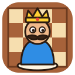
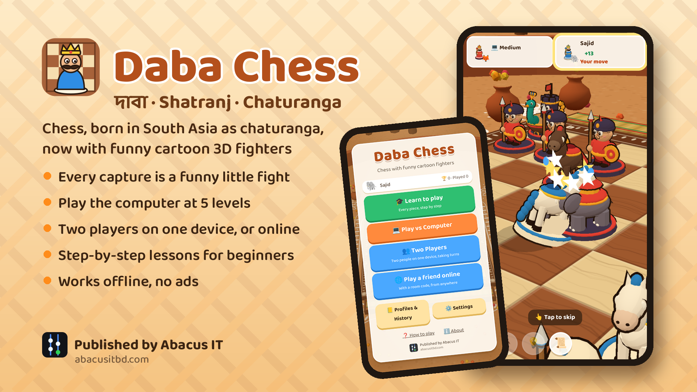
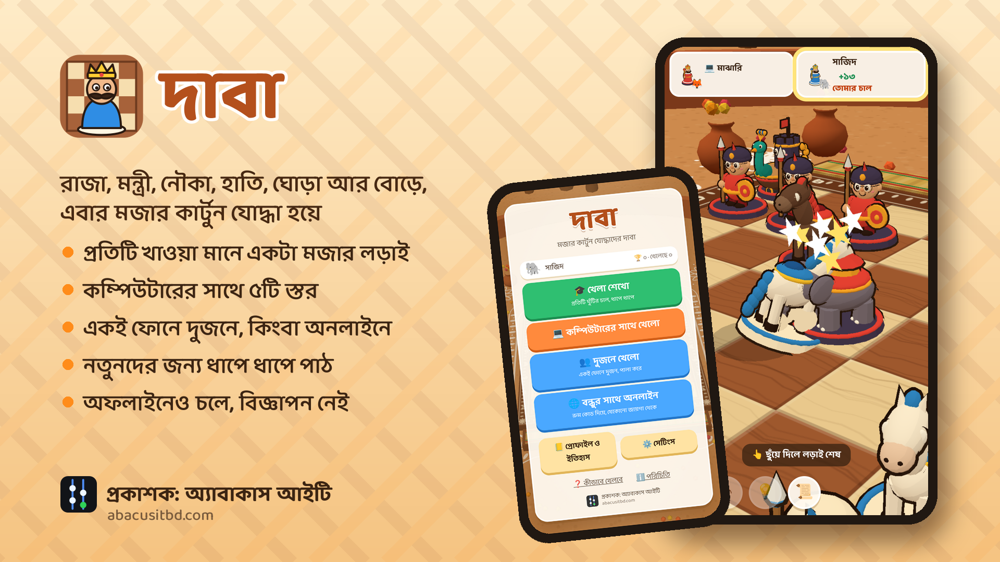
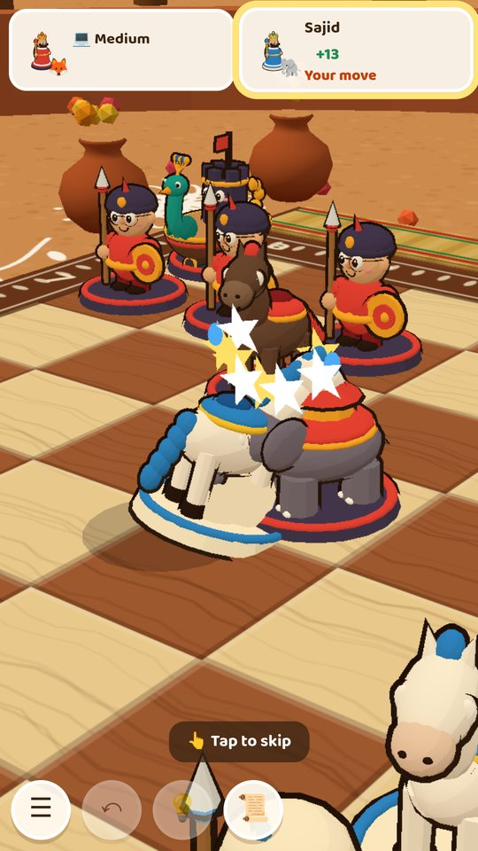
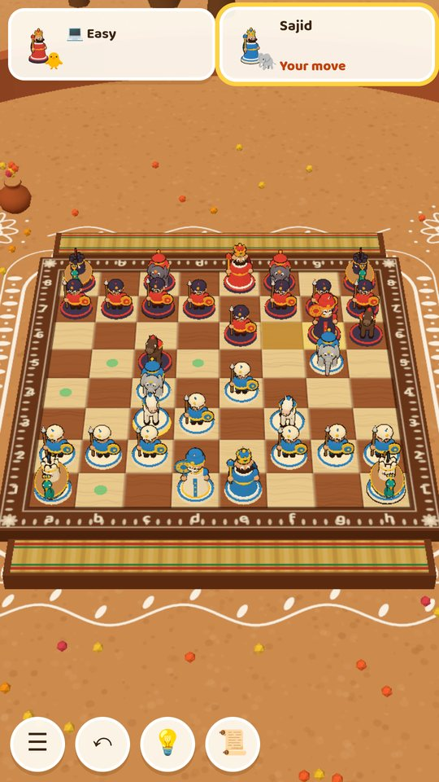
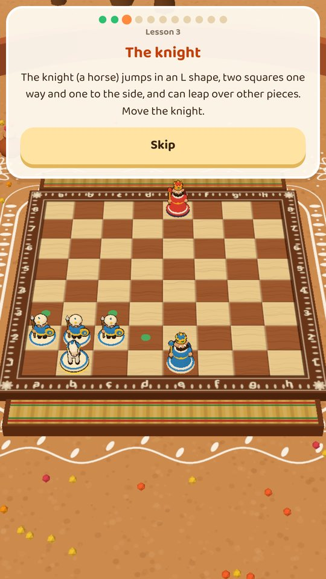
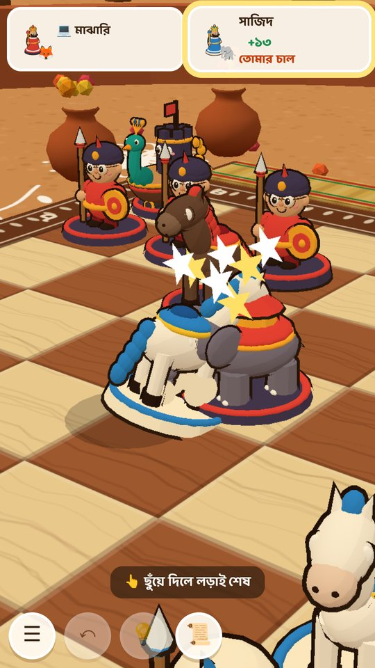
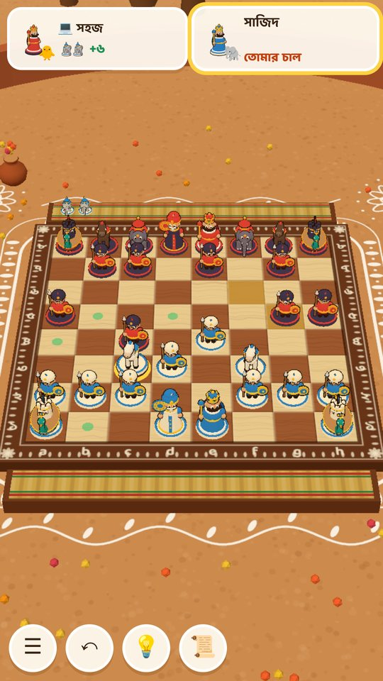
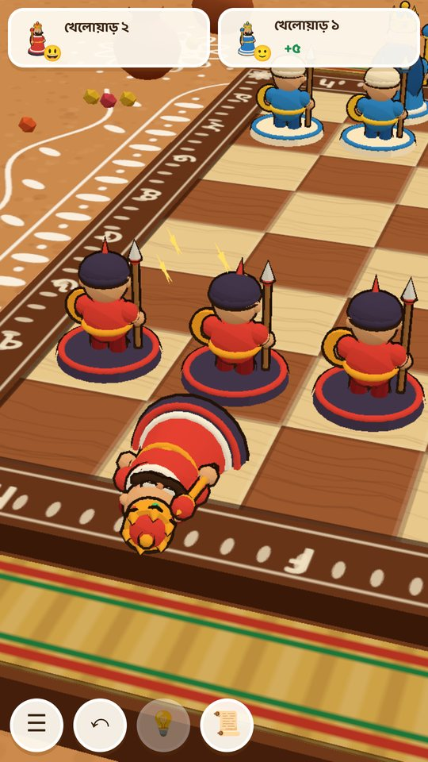
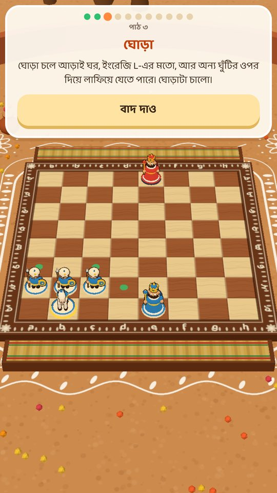

দাবা · Shatranj · chess with funny cartoon 3D fightersমজার কার্টুন যোদ্ধাদের দাবা, রঙিন ত্রিমাত্রিক রূপে









Chess was born in South Asia about one and a half thousand years ago as chaturanga, the four parts of an army: foot soldiers, horses, elephants and chariots. In Bangladesh it is daba, in India and Pakistan shatranj. Daba Chess keeps the full rules and gives every piece a funny cartoon character: the raja, the mantri (minister), the boat, the elephant, the horse and the little soldiers.
White moves first, then the players take turns, one move each. Attack the other king so that it cannot escape in any way: that is checkmate, and the game is won. The lessons in the game teach every piece step by step.
দাবার জন্ম আমাদের এই উপমহাদেশেই, প্রায় দেড় হাজার বছর আগে, চতুরঙ্গ নামে: পদাতিক, ঘোড়া, হাতি আর রথ, সেনাবাহিনীর চার অঙ্গ। এই খেলায় দাবার সব নিয়মই আছে, আর প্রতিটি ঘুঁটি একেকটা মজার কার্টুন চরিত্র: রাজা, মন্ত্রী, নৌকা, হাতি, ঘোড়া আর বোড়ে।
সাদা আগে চালে, তারপর পালা করে একটি করে চাল। প্রতিপক্ষের রাজাকে এমনভাবে আক্রমণ করো যেন সে কোনোভাবেই বাঁচতে না পারে: এটাই কিস্তিমাত, আর খেলা জেতা। খেলার ভেতরের পাঠে প্রতিটি ঘুঁটির চাল ধাপে ধাপে শেখানো আছে।
Also known as: chess, daba, daba chess, dabā, daba khela, bangla chess, shatranj, satranj, shatranj game, chaturanga, chaturangam, chadurangam, sathurangam, buddhibal, buddhichal, chess game, 3d chess, cartoon chess, battle pieces, board game, two player, offline, bangladesh, india, nepal, pakistan, sri lanka, দাবা, দাবা খেলা, দাবার ঘুঁটি, শতরঞ্জ, চতুরঙ্গ, দবা, शतरंज, शतरंज खेल, चतुरंग, बुद्धिबळ, बुद्धिचाल, شطرنج, شطرنج کا کھیل, શતરંજ, ਸ਼ਤਰੰਜ, ଶତରଞ୍ଜ, சதுரங்கம், చదరంగం, ಚದುರಂಗ, ചതുരംഗം, චෙස්